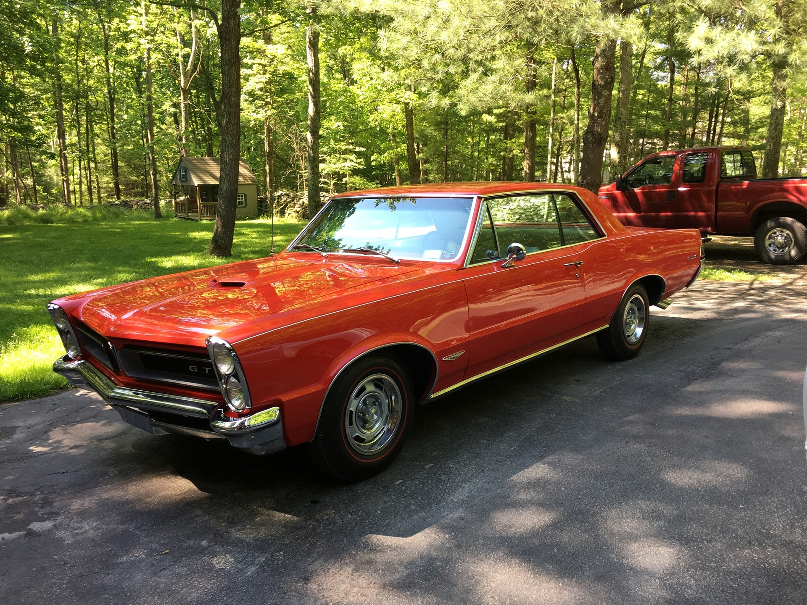
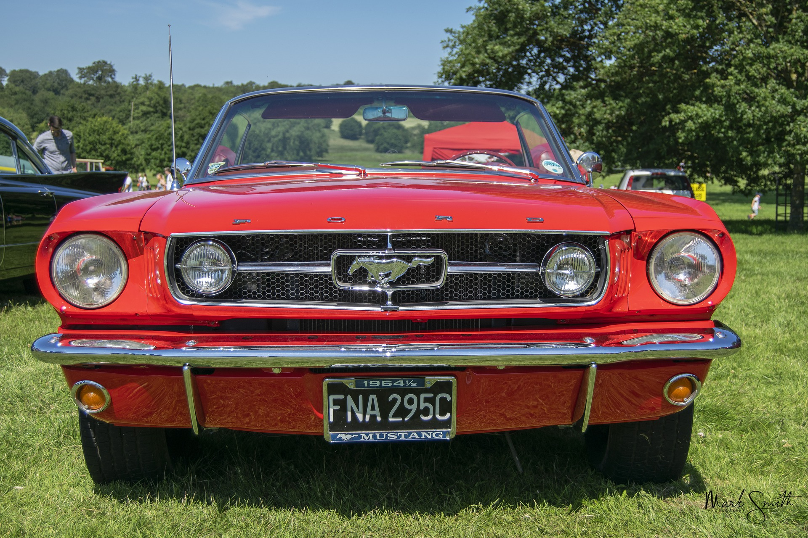
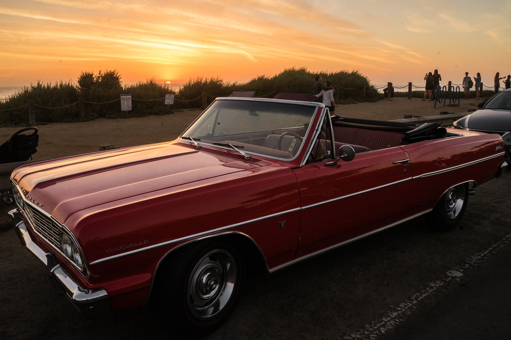
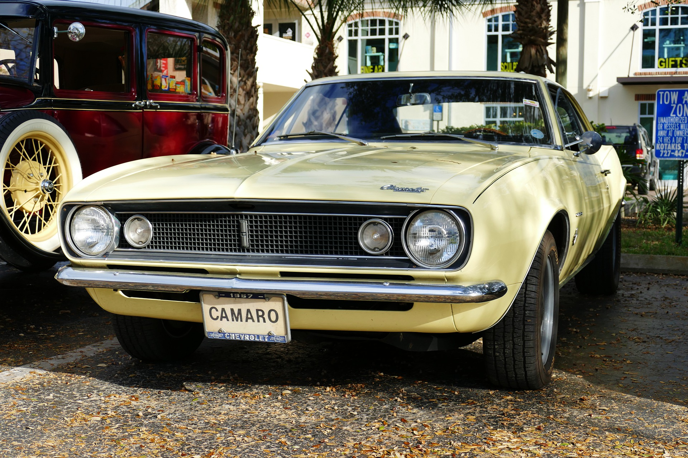

CARS
At Vintage Cars For Hire we have four classic models that you can rent from us:
-
1964 Pontiac GTO
$299 Per Day
THE ORIGINAL 1960s MUSCLE CAR!The Pontiac GTO is widely acknowledged as the car that really kicked off the 1960s Muscle Car era. It was initially offered as an optional package on the mid-size Pontiac Tempest and was the first truly mass-market high performance model to follow the big displacement engine route, using a tuned 389 cubic inch (6.4-litre) V8 engine in place of the entry-level Tempest’s 140bhp six. This top-spec GTO package includes triple carburettors giving 348bhp, a four-speed manual gearbox, uprated suspension, wider wheels and bonnet scoops.
Currently Available
-
1965 Shelby Mustang GT-350
$299 Per Day
THE FORD MUSTANG IS A MUSCLE CAR ICONThe Ford Mustang ‘pony car’ took the US by storm in 1964, selling two million examples in its first two years for production. In spite of its sporty two-door styling most of its underpinnings came from more mundane Ford saloon cars, and the most popular engines were asthmatic straight sixes. A 289 cubic inch (4.7-litre) V8 was soon introduced with up to 271bhp, but it’s the Shelby GT-350 versions of those early cars that really get collectors fired-up. Painted in trademark Wimbledon White with blue stripes along the sill panels, the cars were uprated by legendary Le Mans 24hrs winning driver, and AC Cobra originator Carroll Shelby. As well as a power hike to 306bhp, the Mustang GT-350 featured a side-exiting exhaust system, uprated brakes and suspension, and had a spare wheel mounted where the rear seat should go, making it eligible for sports car racing.
Currently Available
-
1970 Chevrolet Chevelle SS 454
$299 Per Day
THE CHEVELLE SUPER SPORT WAS CHEVROLET'S 1960s MUSCLE CAR MONSTERChevrolet’s first foray into the Muscle Car world was with the Chevelle Super Sport (or SS) introduced in 1964. Early in its life it was significantly out-gunned by the Pontiac GTO, but it wasn’t long before Chevy started turning up the wick. By 1970, the Chevelle SS had reached its most outrageous specification, with a huge 454 cubic inch (7.5-litre) big block V8 that could be ordered with an advertised 450bhp and 500lb ft of torque. With a 0-60mph time of a little over 5 seconds, the 1970 Chevrolet Chevrolet SS 454 was one of the fastest accelerating road cars in the world, and is hugely collectable today.
Currently Available
-
1967 Chevrolet Camaro Z/28
$299 Per Day
CHEVROLET'S ANSWER TO THE FORD MUSTANG, THE CAMARO IS A CLASSIC MUSCLE CAR IN ITS OWN RIGHTThe Chevrolet Camaro was produced in answer to the runaway success of the Ford Mustang, which had been launched in 1964. Arriving three years later, the Camaro was a sporty coupe and convertible based on the Chevy Nova platform, but with some meaty engine options including a 396 cubic inch V8 making up to 375bhp. There were racy RS and SS option packs that included a blacked–out grille with concealed headlamps, simulated air intakes and ‘bumble bee’ striping, but performance purists could opt for the Z/28 package which added serious chassis mods designed for racing versions. The Z/28 goodies include disc brakes at the front, a heavy-duty four-speed manual transmission, upgraded suspension and racing stripes. It came as standard with a lighter-weight 302 cubic inch (5.0-litre) small block V8 making 290bhp, but can also be ordered with a 396 cubic inch (6.5-litre) big block.
Currently Available
ENQUIRIES